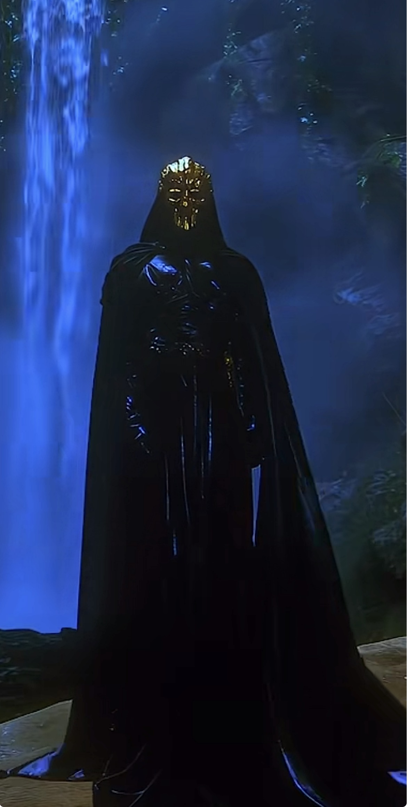

TikTok-edits · dark fantasy
DARK
FANTASY
Een persoonlijke site in het dark-fantasy thema: bewegende edits op de achtergrond, het gouden masker van DFGold, en de VERT_DF2 audio.

Hoofdpersonage
DFGold — drager van het gouden masker
Het gezicht achter de duisternis
In de nevel van het nachtelijke woud draagt DFGold een masker van puur goud. Niemand heeft zijn gezicht gezien — wie het masker aanraakt, hoort alleen fluisteren. Sommigen zeggen dat hij ooit mens was; anderen beweren dat het masker zelf de magie is.
Op deze site staat DFGold centraal: zijn edit staat op de voorgrond, zijn masker geeft de site zijn gouden gloed, en de VERT_DF2 audio is zijn soundtrack.
- Masker: goud, volledig gelaatsdekkend
- Cape: zwart, als rook in de wind
- Wapen: onbekend — sommigen zien een kling onder de cape
- Rol op deze site: hoofdpersonage
Achtergrond
De edits als bewegende achtergrond
De .webp-bestanden hieronder zijn animated: ze spelen automatisch af en wisselen elkaar af als fullscreen achtergrond van deze pagina.


Soundtrack
Audio — VERT_DF2
Het geüploade VERT_DF2.flac-bestand zit in de audiospeler hieronder.
Klik op play (autoplay is door browsers geblokkeerd, dus één klik is nodig).
FLAC afspelen werkt in Chrome, Edge en Firefox. In Safari zie je in plaats daarvan een downloadlink van het originele .flac-bestand.